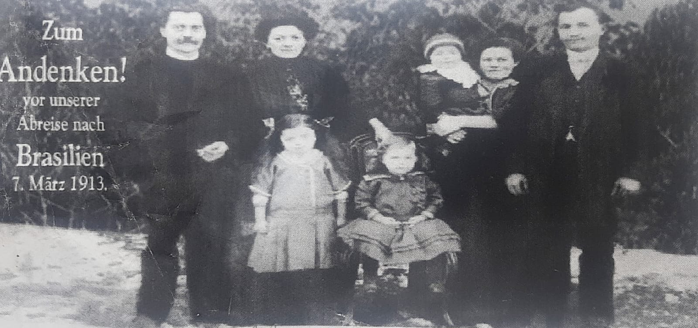

Parte II · O Vapor Formosa e a Floresta
Capítulo 5 — Março de 1913: De Marselha ao Rio de Janeiro
43,3° N · 5,4° L — Marselha · 22,9° S · 43,2° O — Rio de Janeiro
Um rio não esquece o caminho até o mar. As famílias, às vezes, esquecem; os papéis, quase nunca.
Zum Andenken!
A fotografia mede pouco mais que a palma de uma mão, e a cópia que temos é uma reprodução de reprodução, granulada, com as sombras empastadas. Mesmo assim, é das imagens mais importantes deste livro. Na margem esquerda, em letras brancas sobrepostas ao fundo escuro de arbustos, alguém mandou imprimir: Zum Andenken! vor unserer Abreise nach Brasilien, 7. März 1913. “Para recordação! Antes da nossa partida para o Brasil, 7 de março de 1913.”

Há sete pessoas na foto, de pé sobre um chão claro — terra batida, talvez neve velha, é impossível dizer. À esquerda, um homem de bigode e roupa escura, com as mãos juntas à frente do corpo. A seu lado, uma mulher de cabelo preso no alto da cabeça, também de escuro. À direita, uma mulher segurando no colo um bebê de touca e, ao lado dela, um homem jovem, sem bigode, de paletó fechado. Entre os adultos, duas crianças: uma menina de pé, de vestido claro e laço no cabelo, e uma criança menor sentada numa cadeirinha de vime, com um vestido de babados.
Passei muito tempo olhando para essa imagem, e confesso que ela me deu mais perguntas do que respostas. São quatro adultos e três crianças. Se Johann e Maria estão ali — e a inscrição, na primeira pessoa do plural, “nossa partida”, sugere que sim —, quem são os outros dois adultos? Um irmão, uma irmã, um cunhado? E as três crianças: duas delas seriam Luisa, então com uns dois anos, e Walter, com um? A menina de pé parece mais velha do que dois anos. O bebê no colo parece mais novo do que um. Mas eu sei o quanto as roupas de criança daquele tempo enganam — meninos de até três ou quatro anos usavam vestido —, e sei o quanto uma reprodução ruim achata as proporções. Não vou forçar uma identificação. A família me entregou essa foto como a despedida do Fata e da Mota, e é isso que ela é. Quem é quem fica para os primos da Alemanha, se um dia os encontrarmos, ou para outra cópia, mais nítida, que talvez esteja guardada em alguma caixa.
O que a fotografia afirma sem ambiguidade é a data e a intenção. Em 7 de março de 1913, alguém sabia que estava partindo para o Brasil e quis que os que ficavam tivessem uma lembrança. A palavra Andenken tem a mesma raiz de denken, pensar: é aquilo que faz pensar em alguém. A foto foi feita para ser olhada por quem ficava. É uma ironia bonita que ela tenha atravessado o oceano e chegado até nós, os que foram.
Linhas 161 a 164
Marselha — março de 1913
Os emigrantes alemães, em sua maioria, partiam de Hamburgo ou de Bremen, os grandes portos do Mar do Norte. Os Haas partiram de Marselha. Não sei por quê. Talvez a passagem fosse mais barata numa companhia francesa; talvez algum agente de emigração do sul da Alemanha trabalhasse com os navios do Mediterrâneo; talvez a rota pelo sul, evitando o Canal da Mancha e o Golfo da Biscaia no fim do inverno, parecesse mais segura para uma mulher, talvez grávida, com duas crianças pequenas. Fica como pergunta.
Imagino a viagem de trem: da Baviera para o sudoeste, atravessando a fronteira francesa, descendo o vale do Ródano. Imagino o momento em que o ar mudou. Quem sai do inverno continental bávaro e chega a Marselha no início de março encontra outro mundo: luz mediterrânea, oliveiras, e talvez o mistral, o vento frio e seco que desce pelo Ródano e varre o porto em rajadas. Os bisavós trocaram o vento boêmio pelo mistral, e logo trocariam o mistral pelos alísios. É assim que eu, por vício de ofício, desenho a rota deles: não como uma linha no mapa, mas como uma sequência de ventos.
No porto, o vapor Formosa. E, a bordo, uma lista.

Ficha do Arquivo — Lista de passageiros do vapor Formosa, procedente de Marselha, apresentada no Rio de Janeiro. Folha numerada 31. Colunas impressas em português (Numero, Nome e Cognomes, Nationalidade, Idade, Estado, Profissão, Procedencia, Classe, Observações); preenchimento manuscrito em francês. Linhas 161 a 164: Haas Johann, 28, C (casado); Haas Marie, 25, C; Haas Luisa, 2, S (solteira); Haas Walter, 1, S. Nacionalidade Allemand, profissão Agricult., procedência Mlle (Marselha) e 3e Cl. (terceira classe), todas indicadas por aspas de repetição a partir da linha 160. Nota ao pé: “Le Nº 70 continue sur Santos. Restent 174 passagers.” Data e assinatura: “Rio, le 26 Mars 1913. Pour le Capitaine, Le Commissaire”. Imagem: imagens/doc_haas_navio_formosa_1913.jpg.
Quando vi esse documento pela primeira vez, a sensação foi parecida com a de encontrar, numa série de dados que eu julgava perdida, uma observação limpa, com hora e coordenada. Até então, tudo o que tínhamos da viagem de 1913 era memória oral, recontada muitas vezes. De repente, havia um papel escrito por alguém de fora da família, no próprio ano, que dizia: eles estavam aqui.
E o papel diz coisas que a memória não dizia. Diz que Johann se declarou agriculteur, agricultor, e não estucador — o que faz todo o sentido, porque o Brasil queria colonos para a lavoura, não artesãos de cidade, e é provável que o agente de emigração tenha orientado todos a se declararem assim. Diz que Maria tinha vinte e cinco anos, quando na verdade, em março de 1913, ainda tinha vinte e quatro: só completaria vinte e cinco em 7 de abril, já do lado de cá do oceano. Uma diferença pequena, do tipo que se arredonda num guichê. Diz que eles viajaram de terceira classe, como quase todos os emigrantes. E diz, sem nenhuma ambiguidade, que a bordo estavam Luisa, de dois anos, e Walter, de um.
Mais abaixo, na mesma folha, vem uma família inteira de sobrenome difícil de ler — algo como Weidushat —, com pai, mãe e seis filhos de onze anos para baixo. Fico pensando nas conversas na terceira classe entre Maria e aquela outra mãe, com seis crianças. Não sei nada sobre eles. Sei que dividiram a mesma página, e provavelmente o mesmo porão.
Não sei também como foi a travessia. Dezessete ou dezoito dias, talvez, de Marselha ao Rio: o Mediterrâneo, o estreito de Gibraltar, a costa africana, a calmaria equatorial, os alísios de sudeste. Para uma mulher talvez grávida, cuidando de um bebê de um ano e de uma menina de dois, num porão de terceira classe, imagino que cada um desses dias tenha sido longo. Não vou inventar tempestades. A reanálise de 1913 é grosseira demais para me dizer o que o Formosa enfrentou, e eu prefiro o silêncio honesto ao drama inventado.
Sei que chegaram ao Rio em 26 de março. O manifesto diz.
O que o papel diz, e o que ele não diz
Rio de Janeiro — 26 de março de 1913
Durante muitos anos, a família contou a chegada de um jeito só. O texto do centenário, escrito por Marise em 2013, registrou essa versão: o desembarque no Rio teria sido recusado, o navio teria seguido de porto em porto pela costa cumprindo quarentena, com gente demais, comida ruim e “inúmeros óbitos” a bordo, até que a família desceu, exausta, em Laguna.
Preciso ser claro com vocês, porque as primeiras versões deste livro se apoiaram demais nesse texto. Ele foi escrito cem anos depois dos fatos, a partir de lembranças de terceira e quarta mão, para ser lido numa festa. Tem o mérito enorme de ter juntado o que a família sabia. Mas, onde pode ser comparado com documentos, erra com frequência. Por isso a regra deste livro é simples: quando o papel da época e a tradição discordarem, fico com o papel, e a tradição passa a ser uma pergunta, não uma resposta.
O papel da época, neste ponto, é a lista do Formosa. Foi assinada no Rio de Janeiro, em 26 de março de 1913, pelo comissário de bordo, para ser entregue às autoridades brasileiras. Nela estão vivos, nas linhas 161 a 164, os quatro Haas: Johann, Marie, Luisa e Walter. Ninguém da família morreu na travessia. A coluna de observações, onde se anotaria um óbito a bordo, está vazia. A nota do pé da página — “Le Nº 70 continue sur Santos. Restent 174 passagers” — diz que um passageiro seguia para Santos e que os demais ficavam. O Rio era o porto de chegada da família. Nenhum documento que eu tenha visto fala em desembarque recusado, em navio vagando pela costa ou em mortes a bordo.
O que o papel não diz é o que veio depois. Os recém-chegados passavam, em geral, pela Hospedaria de Imigrantes da Ilha das Flores, na baía de Guanabara, e dali eram encaminhados aos estados de destino. Os registros da Ilha das Flores e da Inspetoria de Imigração, guardados no Arquivo Nacional, devem dizer quando os Haas saíram do Rio, em que navio e para que porto de Santa Catarina. Pode ter sido Florianópolis, onde o primo Agenor procurou sem achar, ou Laguna, como diz a tradição. Enquanto esses livros não forem abertos, não sei. E não vou preencher o intervalo com quarentenas e tempestades.
Gertrudes
O mesmo vale para o nascimento de Gertrudes. A tradição diz que ela nasceu em 5 de maio de 1913, no Barracão dos Imigrantes de Laguna. A planilha do primo Agenor diz que nasceu na Alemanha, em 22 de outubro de 1911, e veio no navio. O manifesto não traz nenhuma Gertrudes a bordo, e isso torna a data de 1911 difícil de sustentar: uma menina de dezesseis meses estaria na lista, como estão as crianças de um ano da mesma página. Mas a data e o lugar de 1913 também não têm, por enquanto, nenhum papel que os confirme. Que Maria viajou grávida é o que a tradição diz, e é provável se Gertrudes nasceu em 1913; mas nem isso está documentado. O batismo e o registro civil de Gertrudes, onde quer que estejam, vão decidir a questão.
Onde estão Luisa e Walter
Sobre as duas crianças do Formosa, a tradição escrita também se enganou. O texto do centenário diz que Luisa e Walter morreram ainda nos barracões, enfraquecidos pela viagem. A planilha de Agenor, porém, registra duas crianças, “Lina” e “Valter”, sepultadas em Rio do Ouro, Anitápolis, o lugar para onde a família foi depois da chegada. E há uma testemunha que eu ouvi com meus próprios ouvidos: meu pai.
Baldoíno me contou que foi com os irmãos a Anitápolis buscar os restos dos irmãos pequenos, para trazê-los a Ituporanga. Foi nessa viagem, na serra, que ele viu neve pela primeira vez. Walter está hoje sepultado em Ituporanga, junto da família. As crianças, portanto, sobreviveram à viagem, chegaram a Rio do Ouro e morreram lá. Anos depois, os irmãos foram buscá-las.
“Lina” é, muito provavelmente, a Luisa da lista de bordo, com o nome de casa; “Valter” é o Walter escrito à brasileira. Ainda não sei as datas das mortes, nem o ano do traslado, nem em que inverno nevou na serra para meu pai ver. Mas a história agora se apoia em três pernas: um documento de bordo, uma planilha montada com cuidado e o relato de quem carregou os restos. Já não depende de uma frase escrita para uma festa.
O resto continua em aberto. A data de partida que Agenor anotou, 13 de março, não combina com a fotografia de 7 de março nem com a chegada ao Rio no dia 26. O dia 26 de abril, também anotado por ele, talvez seja o da chegada a Santa Catarina; talvez não. Essas perguntas estão listadas, uma a uma, no fim deste livro, para quem quiser procurar.
Laguna, fevereiro de 2012
Em fevereiro de 2012, fomos a Laguna e a Tubarão — eu, Bárbara, Matheus e Lucas. Matheus tinha nove anos; Lucas ia fazer sete. Não eram muito mais velhos do que Luisa e Walter quando atravessaram o oceano.
Na época, eu ainda não tinha o manifesto do Formosa nem sabia de todas essas contradições. Sabia o que a família repetia: que o Fata e a Mota tinham chegado por Laguna e que ali estavam as primeiras covas da família no Brasil. Hoje sei que a segunda parte está errada, porque as covas estavam em Anitápolis, e que a primeira ainda espera documento. Mas fomos olhar a cidade com essa ideia na cabeça.
Laguna é uma das cidades mais antigas de Santa Catarina, fundada no século XVII. O centro histórico tem casario colonial português, a igreja matriz de Santo Antônio dos Anjos, ruas estreitas que descem para a lagoa. Foi a terra de Anita Garibaldi e o palco da efêmera República Juliana de 1839. É também a cidade dos botos que, há gerações, conduzem os cardumes de tainha na direção das tarrafas dos pescadores na barra — uma cooperação entre espécies que os biólogos estudam até hoje. E é, sobretudo, uma cidade construída em torno de uma passagem de água: a barra que liga o sistema de lagoas ao oceano, por onde entravam e saíam os navios.
Se os bisavós entraram por ali, não deixaram marca. Não há placa, não há registro no cais, não há memorial do Barracão dos Imigrantes que eu tenha encontrado. Há só a barra e a água entrando e saindo com a maré.
Em Tubarão, a poucas dezenas de quilômetros rio acima, vimos o acervo de Willy Zumblick, o pintor da cidade, que dedicou boa parte da vida a retratar a história do sul catarinense — Anita, Garibaldi, os lanchões da República Juliana, a paisagem do litoral. Eu gosto de pintores históricos pela mesma razão que gosto de reanálises: eles reconstroem o que ninguém fotografou, sabendo que estão reconstruindo.
Deixo o resto daquela viagem com os meninos e com a Bárbara, que guardam dela as lembranças deles. A minha, a que importa para este livro, é uma imagem de geógrafo: Laguna fica na foz de um rio. O rio é o Tubarão.
O rio que desce para a barra
Quem chega a Laguna pelo mar não vê o rio Tubarão. Ele desemboca no complexo de lagoas por trás da cidade, depois de descer da Serra Geral, atravessar a cidade de Tubarão e serpentear pela planície costeira. A água que sai pela barra de Laguna é, em boa parte, água que choveu na serra.
Em março de 1974, essa água desceu toda de uma vez.
Nos dias 24 e 25 de março de 1974, uma enchente devastou a cidade de Tubarão. Foi o maior desastre natural da história de Santa Catarina até então. Os números oficiais mais citados falam em cerca de duzentos mortos e dezenas de milhares de desabrigados. Bairros inteiros ficaram submersos; a cidade levou anos para se refazer. Depois da tragédia, o rio foi retificado e canalizado no trecho urbano: as curvas que a água tinha desenhado durante milênios foram cortadas por engenheiros que, com razão, não queriam ver aquilo de novo.
Eu tinha oito anos em março de 1974. Ainda não pensava em ser meteorologista. Hoje, quando olho para aquele evento, vejo o que a minha profissão me ensinou a ver: uma bacia hidrográfica que nasce em escarpas íngremes, recebe chuva orográfica quando o ar úmido do oceano é empurrado contra a serra, concentra essa água em poucas horas e a despeja numa planície baixa, onde ela não tem para onde ir a não ser para os lados. Em 1973 e 1974, o Pacífico estava em fase de La Niña. Muita gente gosta de procurar no El Niño e na La Niña a explicação de cada desastre, e eu preciso ser cuidadoso aqui: essas oscilações mudam as probabilidades, não decidem o destino. O clima carrega os dados; quem joga é o tempo, dia após dia. Uma frente que estaciona, um sistema que se aprofunda, um fluxo de leste que persiste por mais um dia — é isso que transforma uma estação chuvosa numa catástrofe.
Trabalho há anos com modelagem de cheias, hidrologia e previsão. Passei boa parte da carreira tentando antecipar o que os rios de Santa Catarina vão fazer quando a chuva vier — o Itajaí, o Tubarão, e também o Taquari, lá no Rio Grande do Sul, de onde vem a família de Bárbara. Não vou detalhar projetos aqui. Mas quero registrar uma coincidência que só percebi ao escrever este capítulo: a cidade que a família sempre apontou como a sua porta de entrada fica na boca de um rio que, seis décadas depois, faria a maior tragédia da história do estado. E o bisneto deles, sem saber dessa ligação, escolheria passar a vida estudando exatamente esse tipo de água.
Este livro vai voltar às enchentes. No capítulo 13, os três rios das nossas famílias — o Tubarão, o Itajaí e o Taquari — aparecem juntos, porque a chuva que cai sobre eles é, muitas vezes, uma só. Por ora, deixo apenas esta imagem: a barra de Laguna como uma porta de entrada. Por ela entraram navios de imigrantes; por ela sai, todo dia, a chuva da serra. Se os Haas passaram por ela, foi uma vez, de fora para dentro. O rio passa por ela sempre, de dentro para fora.
Em algum dia de 1913 que nenhum papel encontrado até agora registra, Johann e Maria chegaram ao litoral catarinense e subiram a serra. Levavam Luisa e Walter, ainda vivos, e, cedo ou tarde, uma recém-nascida chamada Gertrudes. À frente, as encostas da serra e a promessa de um lote de terra num lugar chamado Rio do Ouro.
O nome, como tantos outros nomes daquela época, era uma promessa que a terra não ia cumprir.